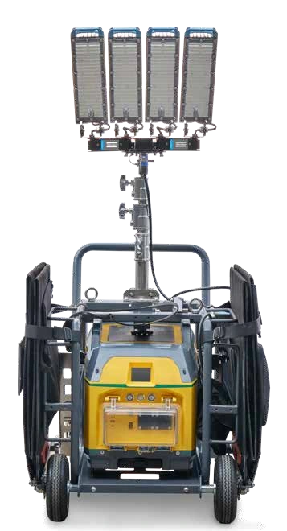

ATLAS COPCO / Equipos auxiliares
HiLight PS 3
Torre LED diseñada para recibir alimentación del sistema ZBP2000, con carro y dos paneles solares plegables de 200 W. La ficha indica 3000 m2 de cobertura.
3000m² de cobertura
4 x 120W de iluminación
3m de altura máxima
Catálogo del fabricante · disponibilidad por confirmar
Consultar este producto
↓ Ver documento del fabricante (PDF, abre en otra pestaña)
Catálogo HiLight · páginas 14, 18 · 2023
CONOCE EL PRODUCTO
Información
técnica.
Datos del documento suministrado. Se conservan las unidades y las alternativas de la fuente.
← Volver a Equipos auxiliares| Cobertura lumínica | 3000 (media de 20 luxes) m2 |
|---|---|
| Lámparas | LED |
| Mástil | Manual vertical |
| Características | Funcionamiento con ZBP2000, función de regulación de intensidad, conexión Wi-Fi, carro y dos paneles solares plegables de 200 W |
| Frecuencia nominal | 50 | 60 Hz |
|---|---|
| Tensión nominal | 100-277 V |
| Potencia nominal (PRP) | 0,48 kW |
| Temperatura de funcionamiento (mín./máx.) | -10 / 50* ºC |
| Tipo | Solar |
|---|
| Focos | LED |
|---|---|
| Potencia | 4 x 120 W |
| Tipo | Manual |
|---|---|
| Rotación | 360 grados |
| Altura máxima | 3 m |
| Velocidad máxima de viento | 50 km/h |
| Tipo | Carro con mástil y dos paneles solares de 200 W para uso con ZBP2000 |
|---|---|
| Carrocería | Cuerpo principal de acero al carbono lacado en gris + acero inoxidable |
| Dimensiones de transporte Barra de remolque fija (largo x ancho x alto) | 1 x 0,72 x 1,22 m |
|---|---|
| Peso | 125 kg |
| Paneles solares plegables | 2 x 200 W |
|---|---|
| Vida útil LED indicada | 50 000 horas |
| Protección indicada para focos | IP67 e IK10 |
¿ES EL PRODUCTO QUE NECESITAS?